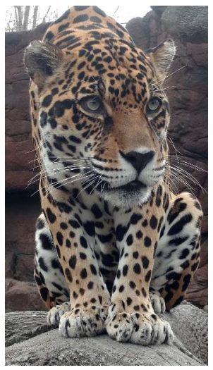
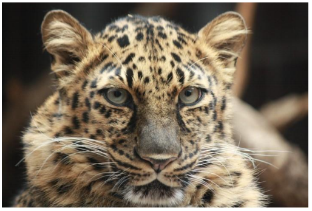
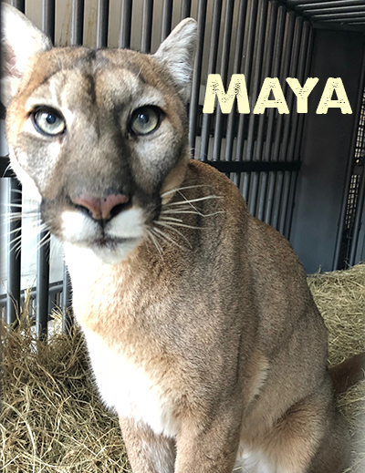

Big Cat Rescue is Caring for Big Cats and Ending the Trade
Join us in the freedom fight for exotic cats! They were designed to live free; not in cages. The number one cause of abuse is the practice of posing with big cats and their cubs because it creates a flood of discarded cats that serve no conservation value and end up dead or in conditions that are often even worse. You will find us to be completely transparent in our values, care of our 60+ wild cats, and finances.
Big Cat Rescue Collaborates with Omaha’s Henry Doorly Zoo and Aquarium to Bring a Jaguar and Leopard to the Sanctuary
December 13, 2017 For the second time in less than a week, Big Cat Rescue has new cats arriving at the sanctuary! We are taking in and will be the permanent home for an 11-year- old male jaguar named Manny and a 16-year- old female leopard named Nat from Omaha’s AZA-accredited Henry Doorly Zoo. What a December to Remember for the sanctuary! Jamie and her team of Big Cat Rescuers are driving the cats to the sanctuary in our new Dodge van that we just purr-chased thanks to the incredible generosity of donors like you who read about our desperate need for a new van in our July annual appeal letter! We are so very grateful to have this van that is not only bringing Manny and Nat to their forever home right now but will help us rescue many precious exotic cats for years to come! Omaha’s Henry Doorly Zoo in Omaha, Nebraska is constructing expansive new natural habitats for many of their big cats and other animals. For this progress to occur, some of their current exhibits are being replaced. When Big Cat Rescue learned that the zoo was searching for a GFAS-accredited sanctuary to rehome Manny the jaguar and Nat the leopard, we immediately offered to take them.
Nat Amur Leopard Nat the Amur Leopard We are happy to have collaborated with Omaha’s Henry Doorly Zoo to bring Manny and Nat to Big Cat Rescue, where they will remain for the rest of their lives. This type of collaboration between an AZA-accredited zoo and a GFAS-accredited sanctuary is not as common as similar facilities working within their own networks, which makes it even more special. We are delighted that the zoo has entrusted Big Cat Rescue with the ongoing well-being of these beautiful cats. We will make sure Manny and Nat continue to receive the best care possible and enjoy their retirement years at our sanctuary. We sincerely thank everyone who has donated to the care of our cats during our 25 years in existence and those who have donated since July to allow us to purchase our new Dodge van! If you’d like to help us out by donating toward the food and care of Manny and Nat, we would greatly appreciate it! Updates will be posted on on their pages at BigCatRescue.org/Manny and BigCatRescue.org/Nat
A Forever Home for the Holidays
December 8, 2017 We are excited to share with you that a team of Big Cat Rescuers is right now driving from Ohio back to our sanctuary in Tampa with a female cougar named Maya! She is 18 years old (which equates to about 100 in human years) and was voluntarily surrendered by her owner to the Ohio Department of Agriculture. Not many elderly captive big cats ever have the opportunity for a second chance and a brand new life at an accredited sanctuary. Mya is scheduled to arrive at Big Cat Rescue this week, so she will be home for the holidays. We plan to spoil her and give her the best veterinary care and nutrition possible. She’s going to live in a big enclosure next to Reise, another elderly female cougar. Big Cat Rescue volunteers are already preparing new toys and a platform in her enclosure. Will you help us welcome Mya to her forever home and donate to her care? Give to Big Cat RescueYOU can help make happy stories like this possible through your sharing, liking and donating. Updates will be posted on Maya’s page at BigCatRescue.org/Maya